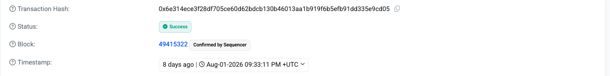

Autonomous liquidation protection for Aave V3 on Base
KeeperHub · Agents Onchain
Health factor
Liquidatedplenty of owners were wide awake — locked out of the infrastructure they needed.
The Planner proposes exactly one action, with one amount.
An independent Critic must return an explicit APPROVE.
The Guard — not a model — re-derives every number and can veto them both.
Basescan · Base mainnet · unretouched

tx 0x6e314ece...9cd05
14 deterministic rules re-derive every figure the models claimed.
Neither model can name an address — addresses exist only in an allowlisted config.
No Critic APPROVE, no execution. DRY_RUN by default; mainnet also needs ARM=1.
12 rules on the day of the save — two more came out of adversarial review.
It refuses absurd prices: Aave's oracle is cross-checked against Chainlink; divergence blocks. (Moonwell's $1.12 cbETH print · Aave's $27M CAPO glitch.)
The risk engine is listed on the KeeperHub marketplace. A second agent — its wallet holding zero ETH — paid for two calls in USDC over x402.
Verify with no account: an unpaid POST returns a live HTTP 402 whose payTo is the defended wallet. Live today at $0.02/call.
322 tests · oojae.github.io/ripcord · github.com/OoJae/ripcord · the save on Basescan
still on watch — HF 1.6630 this morning